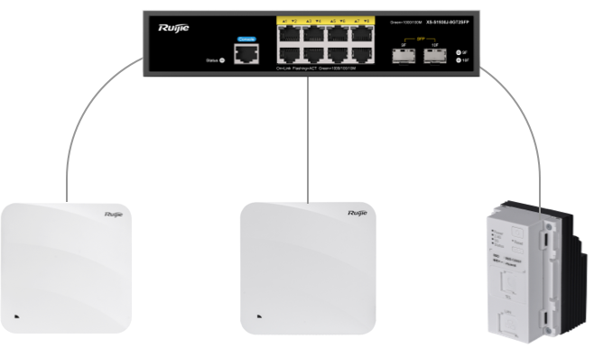

伝統的な埋込型AP設定方法
伝統的な設定方式は、操作員が設備に対して1台1台別々で設定します。時間と人的資源の消費が高く、 人的ミスや安全問題にも発生しやすいです。伝統的な設定プロセスは以下の通り：
パソコン設定
複数の設定ファイルが必要、操作複雑、操作ミスの防犯機能がない
SN番号を手動入力
設定ファイルでのAP数は上限がある
AP電源入り
非POEタイプAP設備は強電を操作する必要がある
有効な安全体制がなく、一回は1台設備をオンにする
APとPC接続
自動的に接続設備を識別することをできない
一回は1台の設備を接続し、パッチ設定できない
設定開始
分かりやすく標識提示がない
ミス防止メカニズムがない
設定時間が長い
設定完了、繰り返す
分かりやすく標識提示がない
WEBGUIのみで設定結果を確認できる
通電のAPを閉じて、時間のロスになる
手間かかる作業を繰り返すしかない

伝統方法
早いパッチ設定ができない
ミスしやすく、メンテナンスコストが高い
効率低く、時間と人的資源の消費が高く、サードパーティーに依頼する必要があり、コストも高い
非POEタイプAP設備は強電を操作する必要があり、安全性が低い
あるトップ会社のお客様の悩み
40W間以上のマンションを管理し、埋込型APを設置されていて、伝統方式でAPを設定しています。
APに対して一個ずつで設定し、毎回設定時間は10分ほどかかります。
1棟マンションは8階構造と考え、毎階8間の場合はトータル64台AP設備があります。11時間をかかって設定完了する。お客様年間200K台AP設備を購入し、平均毎月16666台設備を設定しなければならない。およそ3000時間完成し、内部チームの一手が足りなく、サードパーティーに依頼しなければならない。
簡単な作業を繰り返し、操作員にとってもミスしやすく、繰り返し確認する必要があります。
非POEタイプAP設備に対して、操作員が手動で銅線を操作し、かなり危険です。
設定ミスでアフターサービスコストは2-3万円に一回が必要。
RUIJIE設定ツールの違いは？
RUIJIE設定ツール
本ツールは複数のAPをバッチ構成するため使用し、作業負荷や保守管理員の負担を軽減し、人によっての過失を減らし、 構成効率を向上させることができ、操作員の安全を確保します。
- PC
- スイッチ
-
RG-AP180
Ruijie設定ツール
設定ツールの価値
-
効率的な構成
ツール操作簡単、1つのファイルをインポートし、設備を接続した後ワンクリックで設定完了。操作手順はログがあり、ネットワーク未経験者でも操作できます。
埋込型APにパッチ設定でき、時間コストと人的資源を節約できます。最大10台のAPを同時に設定でき、完成するまで５分間だけ、1人で操作可能です。
APが接続すると自動的に認識でき、手動でSN番号の入力が不要、インポートファイル内の設備を継続的に接続すれば設定できます。インポートファイル内の設備は数量の制限がない。
-
安全な展開
ワンストップサービスを提供し、設定ツールと設定金具により安全で設定することができます。操作員は強電を直接に操作することは不要になります。
一つの設定金具は最大5台のAPに電源を提供し、同時に数台の設定金具を利用して設定することは可能です。設定金具は小さくて、かつ放置しやすくて、オフィスでの使用は可能です。給電の操作も簡単であり、APを設定金具の上から下に押せば設置完了。
設定金具のキー部品は替えられるタイプデザイン、かつLEDの標識により最大限で使用者の安全を守ります。
-
ハイフォールトトレラントレート
設定ツールを利用してAPを設定する場合は、エラー防止メカニズムと提示があり、ヒューマンエラーを有効に防止することができます。
設定ツールの操作はログがあり、ツールの画面で設定状況を把握することができます。また、エラーになった場合は設定することも可能です。
設定ツールは手動でのSN番号の入力が不要、自動的にデバイスを認識でき、かつパソコンのネットワークインターフェースも認識でき、IPアドレスが不正解のネットワークインターフェースを選択された場合にエラーを提示し、最大限でヒューマンエラーを防止する。